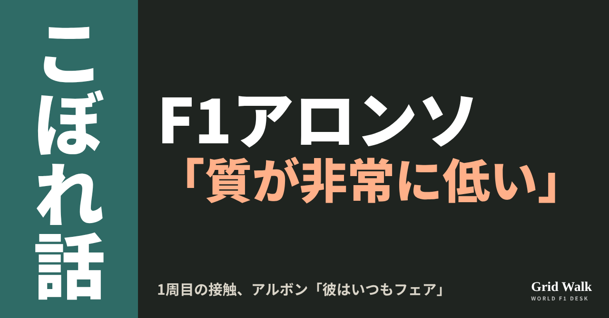
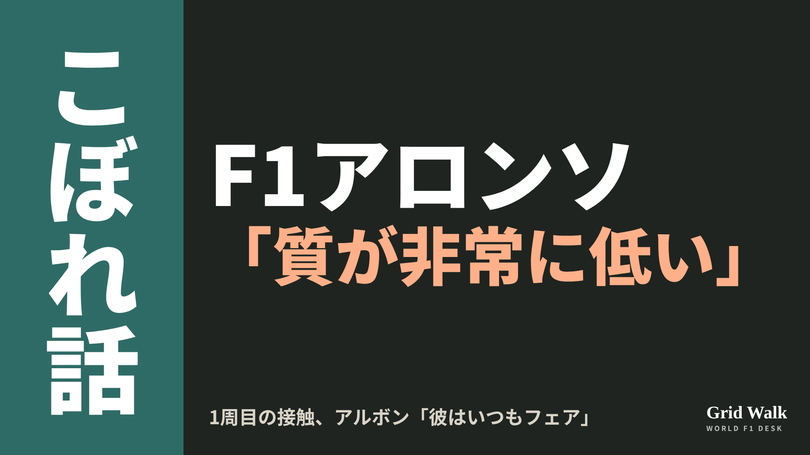

<meta charset="utf-8"><title>OFF GRID 10/26 note貼り付け</title>
<style>
/* one column of numbered paste steps; text steps vs image steps differ by marker */
:root{--bg:#F5F4F0;--card:#FFFFFF;--ink:#1D2321;--mute:#5F665F;--line:#DCDAD2;--btn:#1F5FBF;--btnok:#2E8B4F;--img:#E9F3EC;--imgink:#22663B;--sans:'IBM Plex Sans JP','Hiragino Sans','Noto Sans JP',sans-serif}
@media (prefers-color-scheme:dark){:root:not([data-theme="light"]){--bg:#171A19;--card:#202423;--ink:#ECEDE8;--mute:#A3AAA2;--line:#343937;--btn:#4D8BE6;--btnok:#3FA866;--img:#1E2C23;--imgink:#8FD3A6;color-scheme:dark}}
:root[data-theme="dark"]{--bg:#171A19;--card:#202423;--ink:#ECEDE8;--mute:#A3AAA2;--line:#343937;--btn:#4D8BE6;--btnok:#3FA866;--img:#1E2C23;--imgink:#8FD3A6;color-scheme:dark}
body{background:var(--bg);color:var(--ink);font-family:var(--sans);font-size:15px;line-height:1.75;padding:20px 16px 60px}
main{max-width:680px;margin:0 auto;display:grid;gap:28px}
header h1{font-size:22px;margin:0 0 6px;text-wrap:balance}
header p{margin:0;color:var(--mute);font-size:14px}
nav{display:flex;gap:8px;flex-wrap:wrap;margin-top:12px}
nav a{border:1px solid var(--line);border-radius:999px;padding:4px 14px;color:var(--ink);text-decoration:none;font-size:14px;background:var(--card)}
.part h2{font-size:18px;line-height:1.5;margin:0 0 12px;text-wrap:balance;display:flex;gap:10px;align-items:baseline;flex-wrap:wrap}
.tag{font-size:13px;background:var(--ink);color:var(--bg);border-radius:6px;padding:1px 9px}
.steps{list-style:none;margin:0;padding:0;display:grid;gap:12px}
.st{background:var(--card);border:1px solid var(--line);border-radius:12px;padding:12px;min-width:0}
.hd{display:flex;align-items:center;gap:8px;margin-bottom:8px}
.no{width:26px;height:26px;border-radius:50%;background:var(--btn);color:#fff;display:inline-flex;align-items:center;justify-content:center;font-size:13px;font-weight:700;flex:0 0 26px}
.im .no{background:var(--btnok)}
.hd em{font-style:normal;font-size:12px;background:var(--img);color:var(--imgink);border-radius:6px;padding:0 8px}
.bx{font-size:13.5px;line-height:1.7;border:1px solid var(--line);border-radius:8px;padding:8px 10px;max-height:110px;overflow:auto;overflow-wrap:anywhere}
.bx.tall{max-height:150px}.bx p{margin:0 0 6px}.bx h2{font-size:14px;margin:8px 0 4px}.bx a{color:var(--btn)}
.st img{display:block;width:100%;max-width:100%;border:1px solid var(--line);border-radius:8px}
.sub{font-size:12.5px;color:var(--mute);margin:6px 0 0}
.cp{width:100%;margin-top:8px;padding:12px;border:0;border-radius:10px;background:var(--btn);color:#fff;font:600 15px var(--sans);cursor:pointer}
.cp.ok{background:var(--btnok)}.cp.dl{background:var(--btnok)}.cp:focus-visible{outline:3px solid var(--ink);outline-offset:2px}
.xh{font-size:15px;margin:20px 0 10px}
.fb{font-size:13px;line-height:1.7;margin:8px 0 0;padding:8px 10px;border-radius:8px;background:var(--img);color:var(--imgink)}
.opts{display:grid;grid-template-columns:repeat(auto-fill,minmax(240px,1fr));gap:10px}
.opt{min-width:0}.opt img{display:block;width:100%;border:1px solid var(--line);border-radius:8px}
.ol{display:flex;align-items:center;gap:8px;margin-top:6px}.ol b{font-size:13px;flex:0 0 auto}.ol .on{font-size:12.5px;color:var(--mute);flex:1;min-width:0}.ol .cp{width:auto;flex:0 0 auto;padding:9px 14px}.ol .cp{margin:0;padding:9px}
.toast{font-size:13px;color:var(--mute);margin-top:6px}
</style>
<main><header><h1>OFF GRID 10/26 note貼り付け</h1><p>いま公開済みは1本です。青い番号は文章、緑は画像です。</p><nav><a href="#p1">1</a></nav></header><section class="part" id="p1"><h2><span class="tag">OFF GRID</span>アロンソ「下3分の1は質が非常に低い」　アルボン「彼はいつもフェア」</h2><p class="sub">サイトに公開：22:31</p><ol class="steps">
<li class="st im"><div class="hd"><span class="no">1</span><b>見出し画像</b><em>画像</em></div><button class="cp dl" data-img="img/alonso-albon-backmarkers-20261026.png" data-name="alonso-albon-backmarkers-20261026_見出し画像.png">ダウンロード</button></li>
<li class="st"><div class="hd"><span class="no">2</span><b>タイトル</b></div><div class="bx" id="p1t">アロンソ「下3分の1は質が非常に低い」　アルボン「彼はいつもフェア」</div><button class="cp" data-plain="p1t">タイトルをコピー</button></li>
<li class="st"><div class="hd"><span class="no">3</span><b>本文</b></div><div class="bx tall" id="p1r"><p>「グリッドの下3分の1のドライバーの質は、非常に低いと思う」。アメリカGPのレース後、アロンソがこう話しました。1周目の11コーナーでアルボンと接触し、車を壊されたあとのことです。名指しされたアルボンは、アロンソについて「彼は強いけど、いつもフェア」。2人の言葉の温度は、ずいぶん違いました。</p><p>英語とスペイン語で伝えられたアロンソの言葉と、元の記事へのリンクはサイトで → <a href="https://f1gridwalk.github.io/lens/alonso-albon-backmarkers-20261026/?utm_source=note&amp;utm_campaign=alonso-albon-backmarkers-20261026">https://f1gridwalk.github.io/lens/alonso-albon-backmarkers-20261026/?utm_source=note&amp;utm_campaign=alonso-albon-backmarkers-20261026</a></p><h2>1周目の11コーナーで何があったか</h2><p>イギリスのThe Raceによると、アルボンがアロンソのイン側に飛び込み、アロンソの外側にはオコンのハースがいました。この接触で、アルボンはフロントウイングを傷め、アロンソは左のバージボードが外れています。アロンソは12番手、アルボンは18番手からのスタートでした（RaceFans、F1公式サイト）。</p><p>アロンソは2回目のピットでフロントウイングを替え、1周遅れの16位。アルボンも1周遅れの17位でした（F1公式サイト）。スチュワードは罰を出しておらず（The Race）、FIAが公表した文書の一覧にも、この接触についての文書はありません。The Raceの記事の要約はサイトのニュースにあります（https://f1gridwalk.github.io/news/en-therace-alonso-albon-low-quality/ ）。</p><h2>アロンソ「11コーナーを忘れていた」</h2><blockquote><p>「アルボンは、11コーナーがそこにあって、左に曲がらなきゃいけないことを忘れていた」（アロンソ、RacingNews365／イギリス）</p></blockquote><blockquote><p>「後ろからスタートすると、いつもこういう危険もある。グリッドの下3分の1のドライバーの質は非常に低いと思う。今日のアレックスで見たようにね。だから車をよくして、もう少し前からスタートしないといけない」（アロンソ、PlanetF1／イギリス）</p></blockquote><p>スペインのMotor.esは、この部分をスペイン語で「グリッドの後方では、今、ドライバーの質がとても低い」と伝えています。</p><blockquote><p>「車はぼろぼろ。パルクフェルメで見たけど、フロアの半分がない」「半分の車で12番手を走っていたんだから」（アロンソ、PlanetF1／イギリス）</p></blockquote><p>車が無事なら「たぶん9位か10位。今日は実力でポイントを取れたはずだ」（PlanetF1）とも話しています。</p><h2>アルボン「彼は強いけど、いつもフェア」</h2><blockquote><p>「フェルナンドの右側に車がいたようで、その車は内側には1台しかいないと思ったのか、フェルナンドに十分な場所を残した。でも僕はフェルナンドの内側にいたから、狭くなったんだと思う。よけて縁石に乗ろうとしたけど、乗り切れなかった」（アルボン、The Race／イギリス）</p></blockquote><blockquote><p>「フェルナンドとレースするのはいつも楽しい。彼は強いけど、いつもフェアなんです」「僕がちょっとやり過ぎだと思ったのかもしれない。きっとすぐ分かるでしょう」（アルボン、PlanetF1／イギリス）</p></blockquote><p>ウィリアムズのチームとしてのコメントは、各紙の記事には出ていません。ただ、車の苦しさは前日から見えていました。予選Q1で敗退したアルボンは、こう話しています。</p><blockquote><p>「正直、予選を終えても、FP1のときと同じくらい混乱しています」「セッションごとに違うセットアップを試しているのに、車の根本的な問題を直せない」（アルボン、F1公式サイト／イギリス）</p></blockquote><p>コンストラクターズ選手権の9位争いでは、ウィリアムズがアストンマーティンの5点前にいます（The Race）。オースティンでは、2チームとも点を取れませんでした（F1公式サイト）。</p><p>アロンソの強い言葉は、これが初めてではありません。2022年のベルギーGPでは無線でハミルトンを「なんてばかだ」と言い、次のオランダGPで「そういう考え方はしていない」「彼をとても尊敬している」と謝りました（F1公式サイト）。今回、アロンソがアルボンに何か言うのかは、まだ分かりません。</p><p><strong>1周目の11コーナー、あなたはレーシングインシデントだと思いますか？</strong></p><p>━━━━━━━━━━</p><p><strong>F1 Grid Walk では、世界のF1ニュースを毎日日本語でまとめています。</strong></p><p>海外の記事の要約を、毎日載せています。</p><p><a href="https://f1gridwalk.github.io/">https://f1gridwalk.github.io/</a></p><p>ほかの海外記事も読みたい方は、F1 Grid Walkへ。</p><p><a href="https://f1gridwalk.github.io/lens/alonso-albon-backmarkers-20261026/">https://f1gridwalk.github.io/lens/alonso-albon-backmarkers-20261026/</a></p><p>━━━━━━━━━━</p><p><a href="https://www.the-race.com/formula-1/alonso-slams-low-quality-albon-for-us-gp/">出典：The Race（イギリス）</a></p><p><a href="https://www.planetf1.com/news/fernando-alonso-alex-albon-crash-f1-2026-united-states-grand-prix">出典：PlanetF1（イギリス）</a></p><p><a href="https://racingnews365.com/fernando-alonso-slates-back-of-the-grid-drivers-after-alex-albon-collision">出典：RacingNews365（イギリス）</a></p><p><a href="https://www.racefans.net/2026/10/25/alonso-says-f1-has-very-low-quality-drivers-at-back-of-grid-after-albon-collision/">出典：RaceFans（イギリス）</a></p><p><a href="https://www.motor.es/formula-1/recado-alonso-incidente-inicio-calidad-pilotos-baja-2026117232.html">出典：Motor.es（スペイン）</a></p><p><a href="https://www.formula1.com/en/latest/article/we-cant-fix-core-problems-albon-delivers-honest-verdict-after-challenging-qualifying-for-williams-in-austin.LO31B2xewgPJfUt5kSgoB">出典：F1公式サイト（イギリス）</a></p><p><a href="https://www.formula1.com/en/results/2026/races/1297/united-states/race-result">出典：F1公式サイト（イギリス）</a></p><p><a href="https://www.formula1.com/en/latest/article/i-dont-think-that-way-alonso-apologises-to-hamilton-after-idiot-comments-in.4y8s2OKNB35i98IgZUKp0i">出典：F1公式サイト（イギリス）</a></p></div><button class="cp" data-rich="p1r">本文をコピー</button></li>
<li class="st"><div class="hd"><span class="no">4</span><b>ハッシュタグ</b></div><div class="bx" id="p1h">#F1 #F1jp #アロンソ #アルボン #アストンマーティン #ウィリアムズ #アメリカGP #F1ゴシップ #F1こぼれ話 #OFFGRID</div><button class="cp" data-plain="p1h">タグをコピー</button></li>
</ol><h3 class="xh">X</h3><ol class="steps">
<li class="st im"><div class="hd"><b>X用の画像</b><em>画像</em></div><button class="cp dl" data-img="img/x_alonso-albon-backmarkers-20261026.png" data-name="x_alonso-albon-backmarkers-20261026.png">ダウンロード</button></li>
<li class="st"><div class="hd"><b>① noteをシェアするときの文</b></div><div class="bx" id="p1x0">アメリカGPの1周目、アルボンとの接触でウイングを壊したアロンソは「下3分の1のドライバーの質は非常に低い」。アルボンは「彼は強いけど、いつもフェア」。2人の言葉をnoteにまとめました #F1jp #F1ゴシップ</div><button class="cp" data-plain="p1x0">コピー</button></li>
<li class="st"><div class="hd"><b>② ①への返信</b></div><div class="bx" id="p1x1">ほかの海外記事も読みたい方は、F1 Grid Walkへ。
https://f1gridwalk.github.io/lens/alonso-albon-backmarkers-20261026/?utm_source=x&amp;utm_campaign=alonso-albon-backmarkers-20261026</div><button class="cp" data-plain="p1x1">コピー</button></li>
<li class="st"><div class="hd"><b>③ ②への返信</b></div><div class="bx" id="p1x2">毎日の海外F1ニュースは、日本語でこちらにまとめています。
https://f1gridwalk.github.io/</div><button class="cp" data-plain="p1x2">コピー</button></li>
</ol></section></main><script>
function done(b,msg){const t=b.dataset.t||b.textContent;b.dataset.t=t;b.classList.add('ok');b.textContent=msg||'コピーしました';setTimeout(()=>{b.classList.remove('ok');b.textContent=t},2000)}
function selectEl(el){const r=document.createRange();r.selectNodeContents(el);const s=getSelection();s.removeAllRanges();s.addRange(r)}
async function rich(el,b){
  try{await navigator.clipboard.write([new ClipboardItem({'text/html':new Blob([el.innerHTML],{type:'text/html'}),'text/plain':new Blob([el.innerText],{type:'text/plain'})})]);done(b);return}catch(e){}
  selectEl(el);let ok=false;try{ok=document.execCommand('copy')}catch(e){}
  if(ok){getSelection().removeAllRanges();done(b)}else{done(b,'選択しました。コピーしてください')}}
async function plain(el,b){
  try{await navigator.clipboard.writeText(el.innerText);done(b);return}catch(e){}
  selectEl(el);let ok=false;try{ok=document.execCommand('copy')}catch(e){}
  if(ok){getSelection().removeAllRanges();done(b)}else{done(b,'選択しました。コピーしてください')}}
let dlns=null;(async()=>{try{dlns=await window.claude?.use?.("downloads")}catch(e){dlns=null}})();
async function img(src,b){
  b.dataset.t=b.dataset.t||b.textContent;
  if(!dlns){try{dlns=await window.claude?.use?.("downloads")}catch(e){}}
  if(!dlns){b.textContent='ダウンロードできませんでした';setTimeout(()=>{b.textContent=b.dataset.t},3500);return}
  try{const blob=await fetch(src).then(r=>r.blob());b.textContent='保存の確認を開いています…';
    await dlns.save({filename:b.dataset.name,data:blob});done(b,'ダウンロードしました')}
  catch(e){const c=e&&e.code;b.textContent=c==='declined'?'キャンセルしました':c==='rate_limited'?'少し待ってからもう一度押してください':'ダウンロードできませんでした';setTimeout(()=>{b.textContent=b.dataset.t},3500)}}
document.querySelectorAll('.cp').forEach(b=>b.addEventListener('click',()=>{
  if(b.dataset.rich)rich(document.getElementById(b.dataset.rich),b);
  else if(b.dataset.plain)plain(document.getElementById(b.dataset.plain),b);
  else img(b.dataset.img,b)}));
</script>